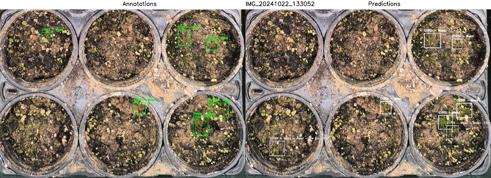

Weed Detection in Rice Cultivation
This is a project to use computer vision (YOLOv8) to predict weeds in rice cultivation. The system helps farmers identify harmful weeds early and apply targeted treatments, reducing herbicide use and improving crop yields.